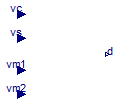

Common interfaces for control blocks
Common interfaces for control blocks
Extends from Modelica.Icons.InterfacesPackage (Icon for packages containing interfaces).
| Name | Description |
|---|---|
| CPMInterface | Common interface for averaged CPM block |
Common interface for averaged CPM block

Common interface for averaged CPM block
Extends from Modelica.Blocks.Icons.Block (Basic graphical layout of input/output block).
| Type | Name | Default | Description |
|---|---|---|---|
| Inductance | L | Equivalent inductance, referred to primary [H] | |
| Frequency | fs | Switching frequency [Hz] | |
| Voltage | Va | Amplitude of the artificial ramp, Va=Rf*ma/fs [V] | |
| Resistance | Rf | Equivalent current-sense resistance [Ohm] |
| Type | Name | Description |
|---|---|---|
| input RealInput | vc | Control input, vc=Rf*ic |
| input RealInput | vs | Sensed average inductor current vs=Rf*iL |
| input RealInput | vm1 | Voltage across L in interval 1, slope m1=vm1/L |
| input RealInput | vm2 | (-) Voltage across L in interval 2, slope m2=vm2/L |
| output RealOutput | d | Duty cycle |